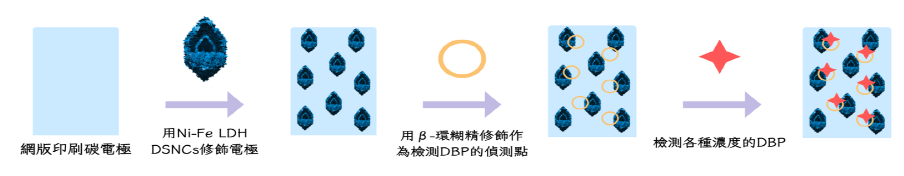
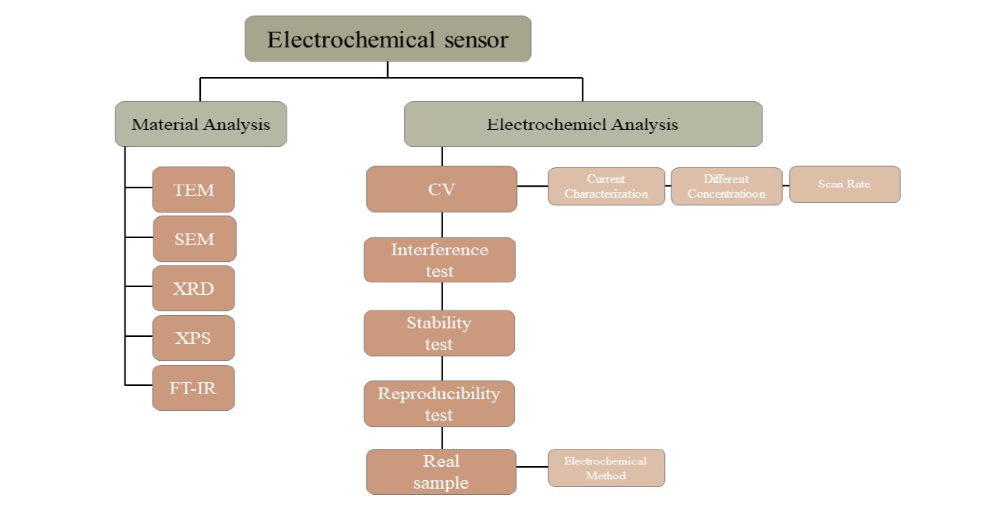

電化學塑化劑感測研究與開發
周芯慧、曾庭婕
摘要
添加鄰苯二甲酸二丁酯（DBP）製成的聚氯乙烯（PVC）廣泛用於消費性產品中。研究顯示長期攝取大量DBP會影響實驗動物的生殖和發育情況。本研究希望使用電化學感測器檢測DBP，使用二維層狀雙金屬氫氧化合物材料增加拋棄式網版印刷碳電極導電性能，再使用β-環糊精修飾作為檢測DBP的偵測點，取代價格高昂、耗費時間長、數量少的液相層析串聯質譜儀。我們利用循環伏安法測試，發現感測器的電流響應對DBP具有線性關係且有高選擇性、穩定性及再現性，經真實樣品測試確認實驗可行性。本實驗將飲料包上PVC保鮮膜加熱，對照電流響應對DBP的線性關係得知該飲料的DBP濃度，期望此設計能應用在食安檢測等塑化劑檢測上。
研究目的
研究過程與方法
研究成果與展望
我們利用循環伏安法進行電化學逐層分析已確認電極有成功修飾，再檢測DBP濃度0.1 ppm-1000 ppm，可以發現電流響應(代表在溶液中有DBP存在)與DBP濃度有良好的線性關係。
為了模擬實際可行性我們利用自製電化學感測器去偵測飲料及含保鮮膜加熱飲料的電流值，我們透過不同濃度之DBP與電流的線性公式，可以得知有加熱過的飲料塑化劑濃度值上升。
未來我們希望此感測器能夠幫助各檢察單位在食品安全或是各項檢測上，能夠快速地得知產品是否有過量的塑化劑，來做初步的判斷。